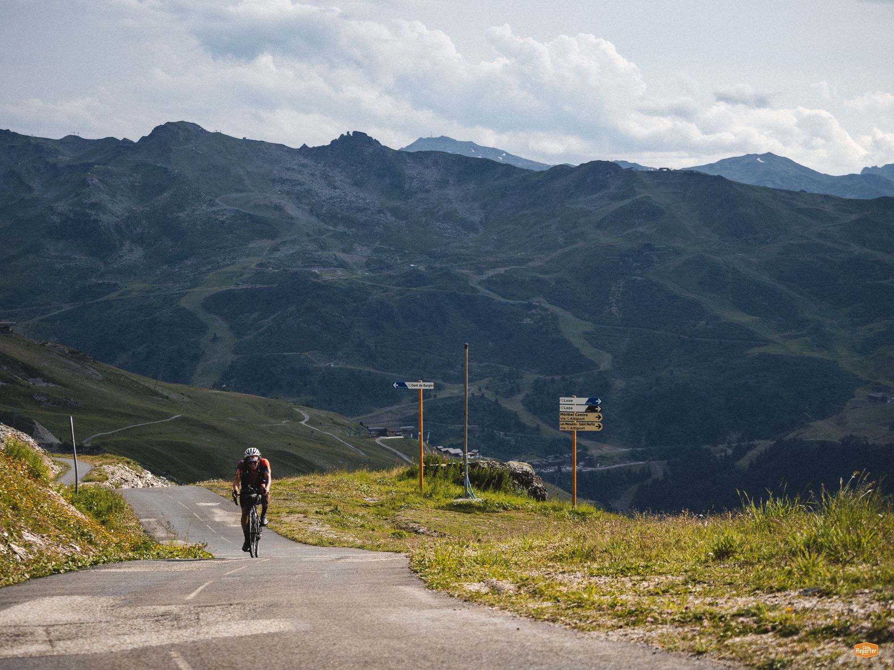

I'm Noah. I help early-stage B2B founders enter new markets and land the partnerships that matter. Off the clock I DJ, co-run a Berlin event series and ride very long distances.
Through Waypoint I work with early-stage B2B startups on the commercial side: who to sell to, which partners open doors, and how to get from first conversations to signed LOIs.
Map a new geography, find local partners and champions, start the first conversations.
→Who you sell to, how you message and price it, what the first 90 days look like.
→Warm intros into the VC, accelerator and corporate-innovation ecosystem.
→n8n and AI workflows for lead research, CRM hygiene and follow-ups, with human approval built in.
→Music is where ecosystem work gets personal. I care about the people who make Berlin's culture happen, and how they can make a living from it.

Book a call. We'll look at where your commercial motion stands and what the next 90 days could look like.